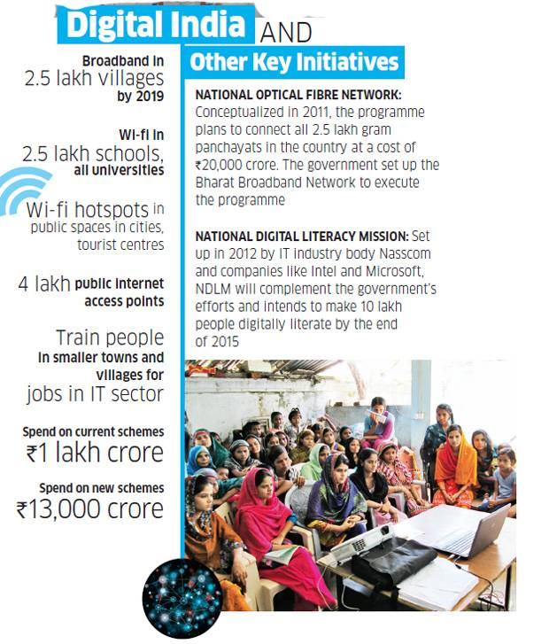

The project also aims to ensure that all villages in India have high speed Internet. Sources say that Prime Minister Narendra Modi will head the monitoring group of the project and will aim to complete the project by 2019.
Digital India project, Prime Minister Narendra Modi's ambitious e-governance initiative, will be the next in the priority list of the government. Sources said like Clean India mission, the Digital India initiative is likely to be launched with much fanfare next month.
The project, with an overlay of Rs.1 lakh crore, will ensure that government services are available to citizens electronically and help people gain benefits from the latest information and communication technology. It also aims to ensure that all villages avail high- speed Internet at affordable rates. Sources said Modi will head the monitoring group of the project and will aim to complete the project by 2019.
Digital India project was discussed even in Modi's U.S. visit as U.S.-based global technology giant IBM expressed keen interest to participate in the initiative. Sources said the government machinery is working on different ideas to make it successful and Modi may connect with about 1,000 village panchayats across the country during the launch of the project. They will be informed about the importance of the programme in detail.
Under the Digital India programme, all central government ministries and departments will come up with their individual projects that can be delivered to public using ICT like health services, education, judicial services etc. Government will prefer to adopt Public Private Partnerships (PPP) wherever feasible for rolling out Digital India programme. Apart for existing e-governance projects, government will restructure National Informatics Centre which facilitates roll out of IT projects in government departments. Government will create positions of Chief Information Officers (CIO) in at least 10 key ministries so that various e-Governance projects could be designed, developed and implemented faster. Besides, the Department of Electronics and IT (DeitY) would create necessary senior positions within the department for managing the programme.
Apart for existing e-governance projects, government will restructure National Informatics Centre which facilitates roll out of IT projects in government departments. Government will create positions of Chief Information Officers (CIO) in at least 10 key ministries so that various e-Governance projects could be designed, developed and implemented faster.
Click Here For More AudiosPrime Minister Narendra Modi's highly anticipated first radio address will be aired on October 3 on All India Radio (AIR) and various other radio networks. The Prime Minister, aims at reaching maximum number of people through his radio programmed titled 'Man ki Baat'.
Click Here For More Videos